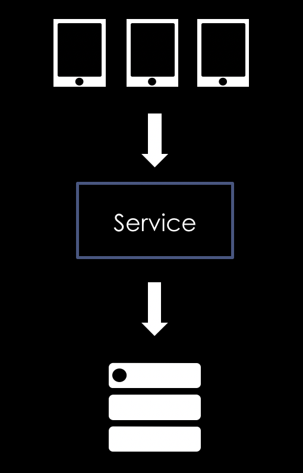

Multiple items
val string : value:'T -> string
Full name: Microsoft.FSharp.Core.Operators.string
--------------------
type string = System.String
Full name: Microsoft.FSharp.Core.string
val string : value:'T -> string
Full name: Microsoft.FSharp.Core.Operators.string
--------------------
type string = System.String
Full name: Microsoft.FSharp.Core.string
val printfn : format:Printf.TextWriterFormat<'T> -> 'T
Full name: Microsoft.FSharp.Core.ExtraTopLevelOperators.printfn
Full name: Microsoft.FSharp.Core.ExtraTopLevelOperators.printfn
val ignore : value:'T -> unit
Full name: Microsoft.FSharp.Core.Operators.ignore
Full name: Microsoft.FSharp.Core.Operators.ignore
Orleankka + F#
Statefull distributed architecture via MSFT Orleans
Alexander Prooks - @aprooks
Stateless
Pros
- Easy?
- Scalable? application servers
Cons
- State = database
- Complixity via Queues, BUSes etc. => latency
- Cache invalidation
-
External scheduling:
- lock user if it was not activated for 24 hours?
Objects in memory?
- Concurrency (locks, mutexes etc.)
- Object location
- System Resilience
- Memory management
=> Don't do it!
Actor model
- Function or object
- Isolated state
- Syncronous execution
- Messages (requests) are queued

Implementations
- Erlang ( Since 1986! )
- Akka: Jvm and .Net
- Orleans: .Net and Orbit Jvm
- ProtoActors: Go, .Net (cross platform)
Akka/Erlang
1: 2: |
|
Orleans
1: 2: |
|
Orleans vs others
- Virtual actors = grains
- At-least-once delivery by default
- Caller awaits remote execution
-
Runtime manages pain points:
- Clustering and availability
- Grain distribution
-
GC inactive grains
Simplicity => Profit!
Programming model
1: 2: 3: 4: 5: 6: 7: 8: 9: 10: |
|
Orleankka function interface
1: 2: 3: 4: 5: 6: 7: 8: 9: 10: |
|
Calling another actor
1: 2: |
|
Orleans + F# =
1: 2: 3: 4: 5: 6: 7: 8: 9: 10: 11: 12: 13: 14: 15: 16: 17: 18: |
|
Calling grains
1: 2: 3: 4: 5: 6: 7: 8: |
|
Core components
1: 2: 3: 4: 5: 6: 7: |
|
DEMO
Marketing
-
Halo with 14 ml users
- "25 servers with 90% utilization without any instability"
-
linear scaleability
- EA implemented Orbit in JVM
-
Stuff I did:
- License and usage tracking + finance
- Property management system
-
Utility services *
Weapping up
- F# is awesome DDD oriented language
- Orleans is awesome platform
-
F# + Orleannkka =>
- safety
- development speed